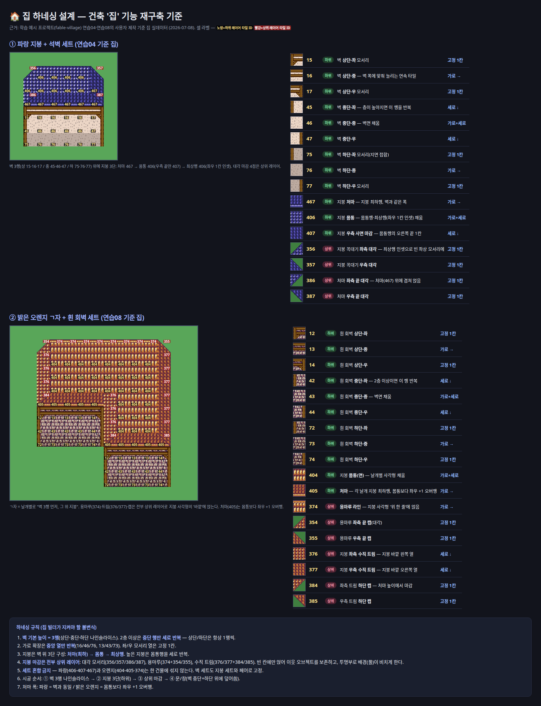
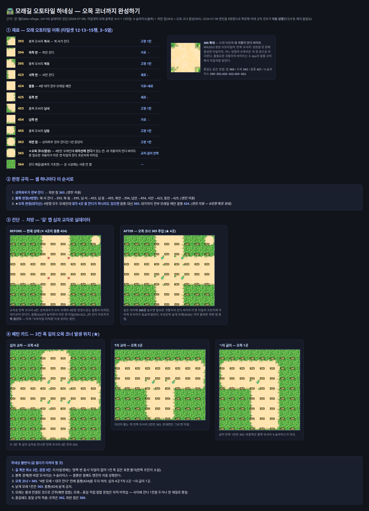
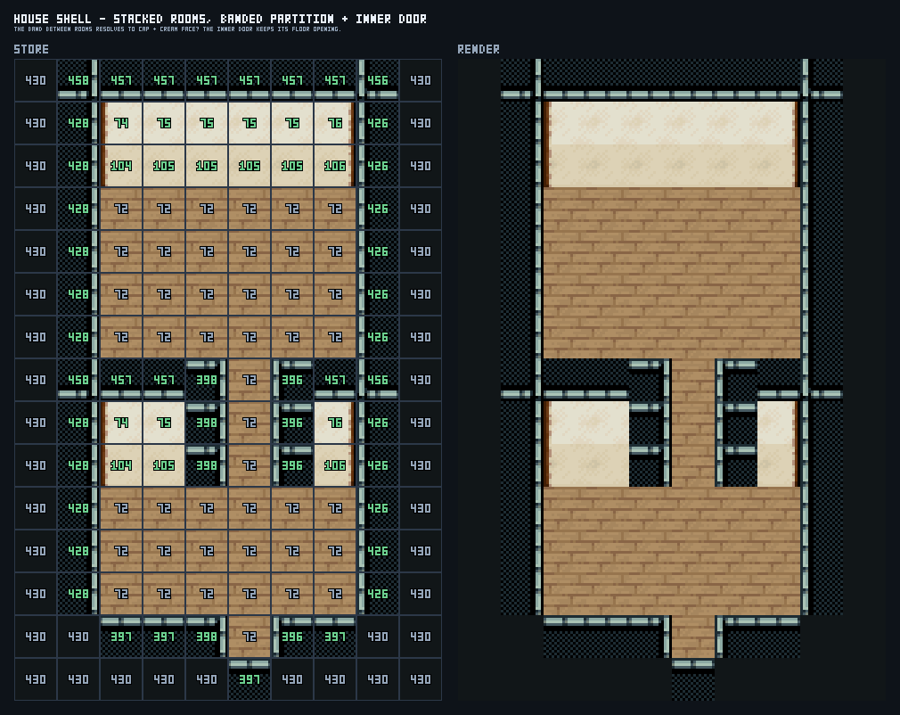

프로젝트 입구와 경계 설명
PROJECT_WIKI에서 시작하고 작업 영역별 문서로 이동하는 구조, LegacyDb 저장 규칙, 코드가 최종 정답이라는 원칙은 이 복잡한 에디터에 필요합니다.
RPG ZZU / EDITOR DIAGNOSIS
예전 집 템플릿, 현재 툴바 스탬프, 선택 영역 AI, 집 키트, 마을 세션, 100×100 전용 빌더가 같은 “건축” 아래 함께 살아 있습니다. 문서만 흩어진 것이 아니라 실행 입구도 갈라져 있습니다.



한 문장 결론
처음 프로젝트를 이해하는 데는 도움이 됩니다. 그러나 실제 에디터에는 위키보다 더 많은 건축 진입점과 세대가 공존합니다.
PROJECT_WIKI에서 시작하고 작업 영역별 문서로 이동하는 구조, LegacyDb 저장 규칙, 코드가 최종 정답이라는 원칙은 이 복잡한 에디터에 필요합니다.
사용자 스킬, 선택 영역 AI, 툴바 스탬프, 일반 AI 도구, 전용 저작 스크립트가 서로 다른 경로를 선택합니다. 한곳에서 결정하지 않습니다.
“하네스가 부족하다”가 아니라, 하네스가 너무 많은 층에서 서로 다른 뜻으로 쓰이는 것이 문제입니다.
정정 / 네 기억이 맞음
앞선 설명은 실행 도구만 세어서 좁았습니다. 실제 코드는 “하네스”를 재료 지식부터 LegacyDb 저작 스크립트까지 서로 다른 뜻으로 씁니다.
같은 집·마을 요청을 서로 다른 방식으로 시작합니다.
프롬프트, 의도 분류, 40개 툴 노출 상한이 실제 선택을 바꿉니다.
원샷, 필지, 세션, 파이프라인이 동시에 공개되어 있습니다.
공개 도구 아래에서는 집 코어를 일부 공유하지만 배치기는 다시 갈립니다.
건물을 짓지 않고 타일 그룹·레이어·통행·재료 의미를 시드합니다.
같은 실행층이 아닙니다. 일상 에디터 밖에 있다는 공통점 때문에 한 묶음처럼 보입니다.
OpenWiki 가이드는 파일을 찾아가게 해주지만, 위 여섯 층 중 “어느 앞문이 현재 정본인지”를 한 장으로 고정하지 않습니다.
가장 큰 문제
앞문·프롬프트·내부 배치기가 한 화면에 섞여 있습니다. 여러 경로가 결국 HouseKit 코어로 합류하지만, 그 전의 라우팅과 계약이 서로 다릅니다.
build_wallbuild_house_lotsbuild_house_kithouse-templatesmall_house_01village/buildHousesbuild_house_kit
숫자로 보이는 파편화
마을 생성 스킬
villagePlan.ts
village/constants.ts
largeVillageBboxPlan.ts
HISTORICAL LOG / 2026-07-11~13
이후 집·실내 강제 라우팅 정책이 보강됐으므로 현재 재현을 단정하는 표는 아닙니다. 다만 경로별 계약이 갈렸을 때 어떤 일이 났는지는 그대로 보여줍니다.
build_house_kit 최소 크기와 맞지 않아 스펙 3회 실패, 실제 변경 0칸
399301…
build_house_kit가 선택되어 야외집+자동 실내 생성
24683a…
56afe3…
7ebd63…
실제 레포 이미지
최근 적대 리뷰는 독립 평가와 시각 QA가 비어 있음을 지적합니다. 이미지를 누르면 현재 레포의 원본 산출물을 볼 수 있습니다.
벽, 지붕, 레이어, 타일 ID까지 정리되어 있습니다. 문제는 이 하네스를 언제 써야 하는지가 다른 곳에 적혀 있다는 점입니다.
교차로와 코너 규칙이 보입니다. 하지만 마을 빌더가 어떤 도로 규칙 버전을 쓰는지는 한눈에 연결되지 않습니다.
그래서 “실내 방 2개” 요청이 야외 집 키트로 가면 결과가 틀립니다. 의도 분류가 하네스보다 앞에 있어야 합니다.
현재 QA는 겹침과 통행을 잘 봅니다. 공간감, 밀도, 보기 좋은 구성은 이미지 검증이나 사람 승인으로 따로 확인해야 합니다.
scripts/natural-village/*는 생성 하네스를 가져오지 않는 비교용 정답지입니다. 실행 앞문이 아니라 결과를 재는 기준입니다.
author-natural-village-harness.mts는 build_village를 호출하고 별도 프로젝트 ID로 저장·재로드합니다. 비교에는 좋지만 일상 저작 앞문은 아닙니다.
약 106 KB
약 59 KB
약 15 KB
고치는 방법
세부 빌더는 내부 구현으로 남기고, 사용자가 선택한 기존 맵과 새 맵 생성을 명시적으로 갈라 같은 라우팅 계약을 사용하게 합니다.
CANONICAL_BUILD_ROUTES
author_house → 내부에서 house kitauthor_house + bounds 계약interior sessionauthor_village({ target: existing|new })build_castle스킬, 영역 AI, 팔레트가 같은 파사드를 호출하고 기존 맵/새 맵을 인자로 명시하게 합니다.
stamp_structure는 이미 LLM 노출에서 빠졌으니 역사 문서에 제거 상태를 표시합니다. 반대로 라이브 house-template은 먼저 단일 집 파사드로 이관한 뒤 호환 브리지를 걷어냅니다.
npm run village:harness 하나로 오프라인 시공·독립 평가·스크린샷 QA를 돌리고, 통과 뒤에만 LegacyDb 저작 경로를 탑니다.
위키를 더 쓰기 전에 실행 앞문과 라우팅 계약을 하나로 만들고, 위키는 그 계약에서 생성해야 합니다.